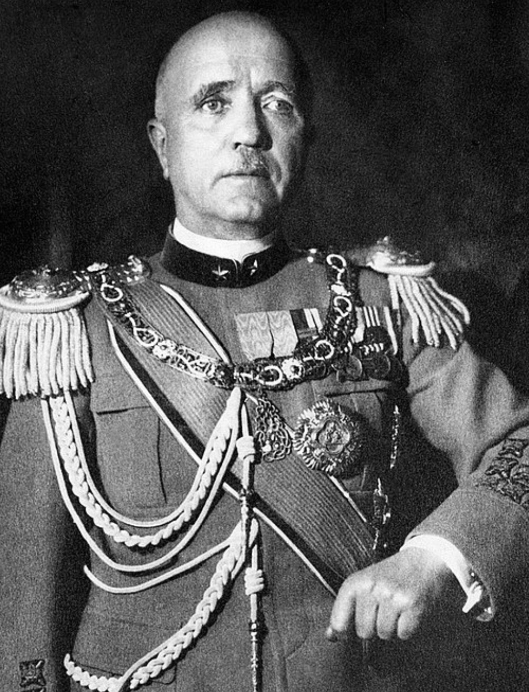

Nom : Pietro Badoglio
Dates : 28 septembre 1871 – 17 novembre 1956
Nationalité : Italienne
Grade : Maréchal d’Italie
Pietro Badoglio est l’un des principaux chefs militaires italiens du premier XXᵉ siècle. Maréchal d’Italie, il occupe des postes majeurs sous le régime fasciste, avant de devenir chef du gouvernement après la chute de Mussolini en juillet 1943. Son rôle est central dans la transition de l’Italie hors de l’alliance avec l’Allemagne nazie.
Badoglio participe à la direction militaire de l’Italie fasciste, notamment en Éthiopie et dans les premières phases du conflit. Après l’effondrement du régime de Mussolini, il est nommé chef du gouvernement par le roi Victor-Emmanuel III.
Sous son autorité, l’Italie signe l’armistice avec les Alliés le 8 septembre 1943, mettant fin à sa participation aux côtés de l’Allemagne. Cette décision provoque une réaction immédiate de Hitler, qui envahit le pays et installe la République sociale italienne.
Badoglio occupe une place unique dans l’histoire italienne : militaire influent du régime fasciste, puis dirigeant de la transition vers la paix avec les Alliés. Son action marque profondément le tournant de 1943, moment où l’Italie change de camp et entre dans une période de guerre civile et d’occupation allemande.